Calendario Eventi 2026
Ventesima Edizione della Rassegna Senza Orario Senza Bandiera
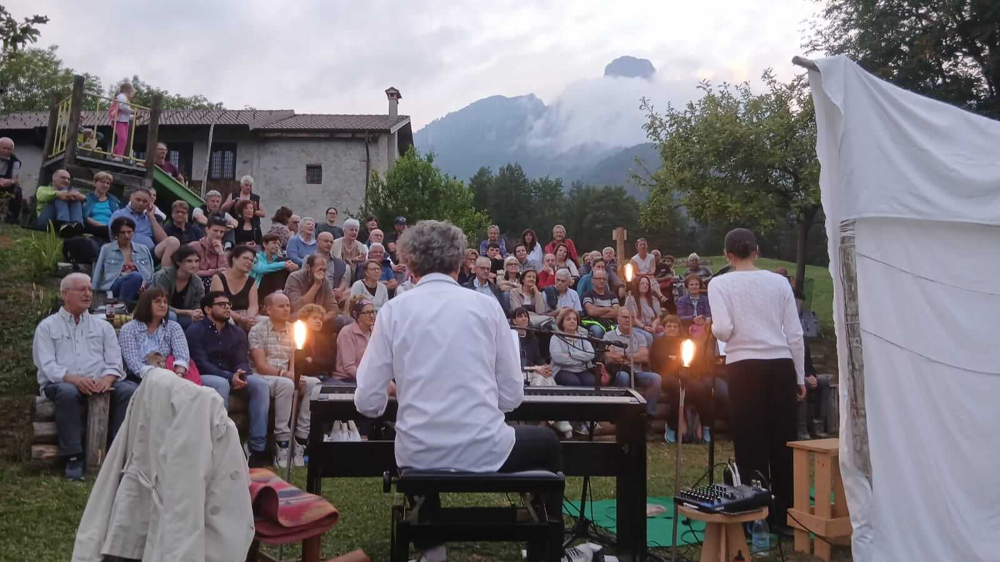
PAROLE PER NERIO
Viaggio teatrale e percorso poetico che racconta i lunghi anni di frequentazione e amicizia con Nerio Brian.
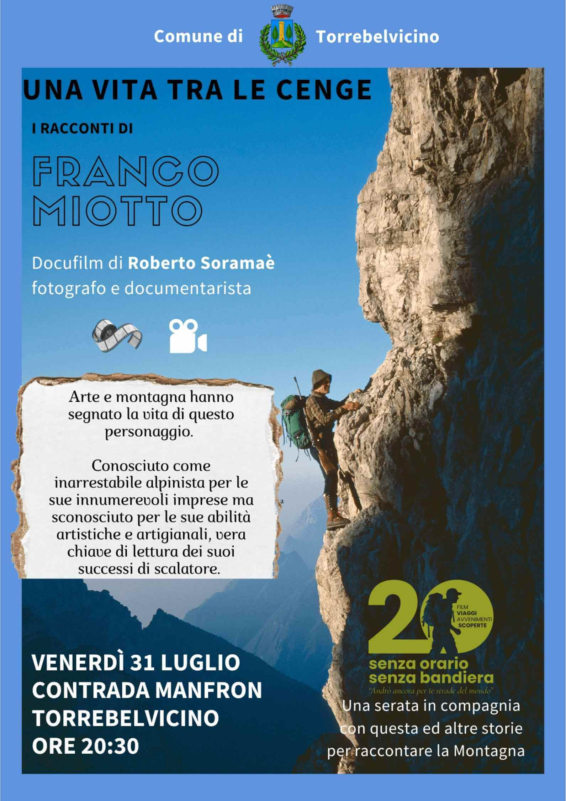
Viàz: la storia di Franco Miotto, alpinista e artista
Un incontro dedicato alla vita e alle esperienze di Franco Miotto, alpinista, viaggiatore e artista, tra montagna, avventura e creatività.
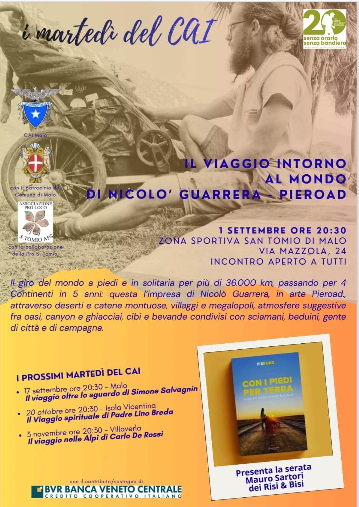
Il viaggio intorno al mondo
Il giro del mondo a piedi e in solitaria per più di 36.000 km, passando per 4 Continenti in 5 anni: questi i numeri principali di una impresa che ha visto Nicolò Guarrera, in arte Pieroad, attraversare deserti e catene montuose, conoscere villaggi e megalopoli, respirare atmosfere sugge stive fra oasi, canyon e ghiacciai, condividere cibi e bevande con scia mani, beduini, gente di città e di campagna. Un racconto avvincente attraverso gli occhi meravigliati e curiosi di un ragazzo partito in cerca di storie e di vite belle ma soprattutto per realiz zare i suoi sogni e la sua storia.
Viaggio in camper con i coniugi Cengia
Un racconto di viaggio attraverso esperienze, incontri e avventure vissute on the road dai coniugi Cengia a bordo del loro camper.
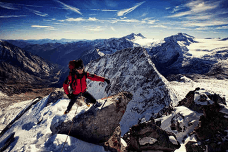
Il viaggio oltre lo sguardo
L’atleta paralimpico scledense Simone Salvagnin apre le porte del suo mondo, un universo fatto di suoni, sapori e sensazioni. Attraverso i suoi racconti di viaggi, competizioni e avventure, ci accompagna dal Sud America al Nepal, dall’Islanda alle Dolomiti. Con la percezione di sole sagome e ombre, trasforma ogni esperienza in un’emozione viva, dimostrando che i limiti si superano con il coraggio e la curiosità. Un viaggio dentro e fuori se stessi, capace di ispirare ed entusiasmare.
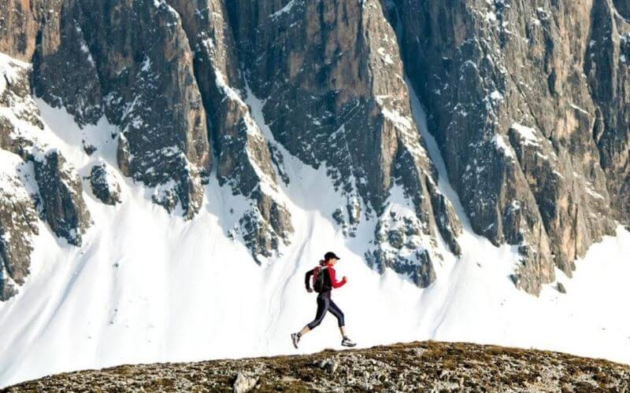
Sulle orme dei giganti
Dario Pedrotti presenta il libro Sulle orme dei giganti insieme ad Alberto Ferretto, in un incontro dedicato alla montagna e all'esplorazione.
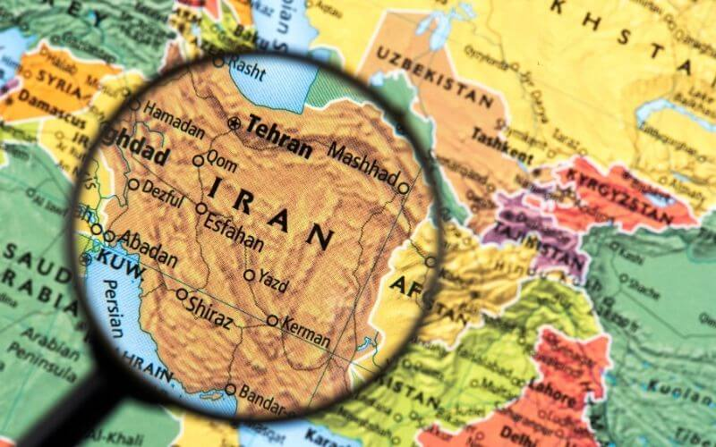
Serata sull'Iran con Valentina Gobbi
Un viaggio alla scoperta dell'Iran attraverso racconti, immagini e testimonianze, guidati dall'esperienza di Valentina Gobbi.
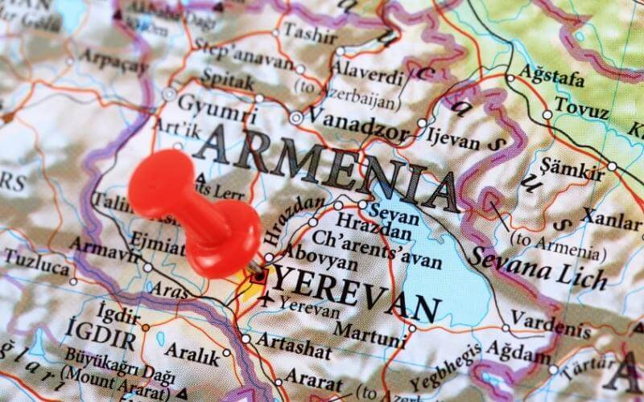
L'anima dell'albicocco
Il documentario L'Anima dell'albicocco è un viaggio alla scoperta del popolo armeno, una cultura antica e profondamente legata alla storia europea. Attraverso la musica evocativa di Giuseppe Dal Bianco e Giuseppe Laudanna, il racconto accompagna lo spettatore tra luoghi, tradizioni, arte, religione, alfabeto ed educazione scolastica di un popolo rimasto vivo e coeso nonostante le drammatiche vicende della sua storia. Testimonianze dirette, approfondimenti e visite ai principali luoghi armeni di Venezia e del Veneto permettono di comprendere l'essenza dell'armenità: una combinazione di fierezza, rispetto per le altre culture, solidarietà, integrazione e straordinaria resilienza. Regia di Vittorio Canova.
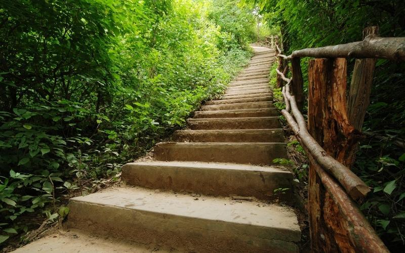
Il viaggio spirituale
Da sempre per l’uomo il viaggio, il pellegrinaggio ha avuto un significato molto concreto, come bisogno insopprimibile di andare, di scoprire, di giungere a una meta affrontando anche lunghi e difficili percorsi. A questa dimensione fisica si è sempre accompagnata una ricerca interiore, una ricerca di senso e di qualità della vita. Domande come “da dove vengo, dove vado, dove sono?” sono al centro del cammino umano. Se il viaggio è veramente umano, è anche autenticamente spirituale.
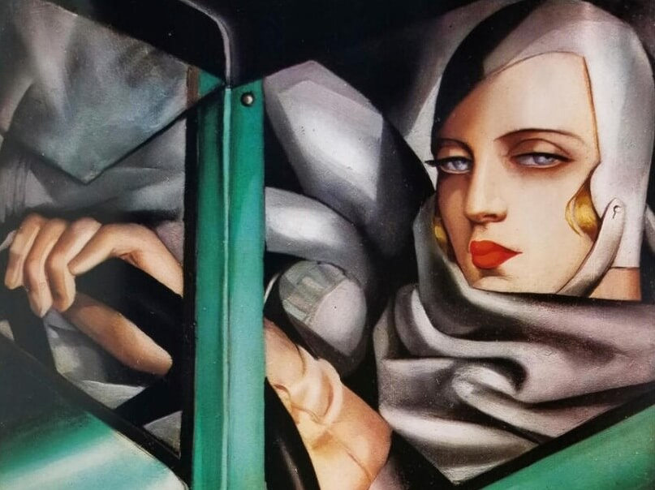
Diva d'Acciaio: Il caso Tamara de Lempicka
Presentazione del libro “Diva d’Acciaio: Il caso Tamara de Lempicka”, un incontro dedicato alla vita e all’opera della celebre artista. Un percorso tra arte, biografia e storia per riscoprire una delle figure più iconiche del Novecento.
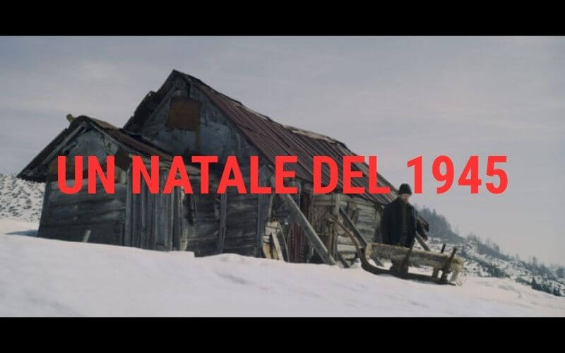
Proiezione del cortometraggio "UN NATALE DEL 1945"
Proiezione del cortometraggio tratto dall'opera di Mario Rigoni Stern, dedicato ai ricordi e alle atmosfere del dopoguerra.
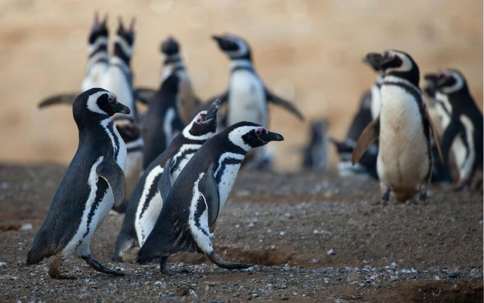
Viaggio in Patagonia
Un racconto di viaggio tra le terre estreme della Patagonia, tra montagne, ghiacciai e spazi infiniti. Un’esperienza che unisce avventura, natura e scoperta attraverso il viaggio esplorativo con Kailas.